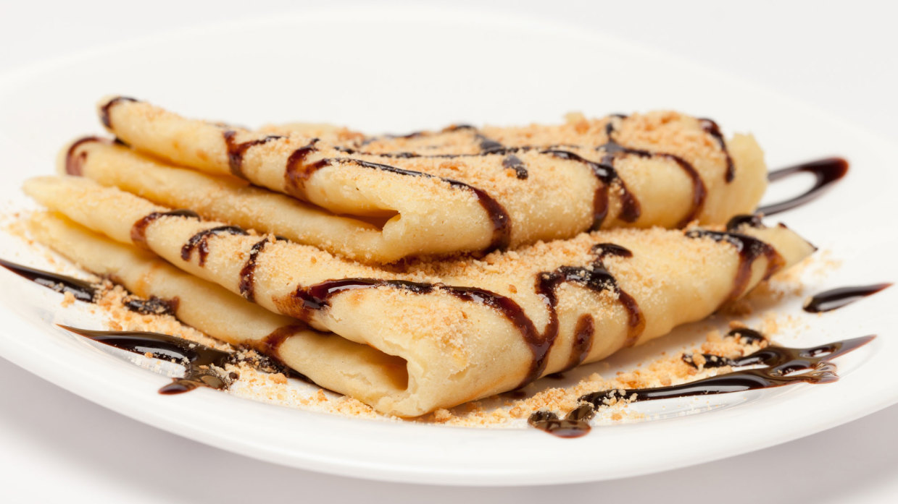

Crepes caseros de Eva Arguiñano
Ingredientes
- 125 gr de harina
- 250 ml de leche
- 5 gr de azúcar
- 1 cucharadita de mantequilla para untar la sartén
- 2 huevos
- 50 gr de mantequilla
- 1 pizca de sal
- En primer lugar, funde la mantequilla introduciéndola en el microondas durante 30 0 40 segundos.
- A continuación, pon en un vaso de batidora los ingredientes líquidos: la leche, la mantequilla fundida y los huevos.
- Añade la harina, el azúcar y la sal.
- Tritura todos los ingredientes hasta conseguir una crema y pasa la mezcla por un colador para eliminar cualquier grumo que pueda tener.
- Unta una sartén antiadherente con una cucharadita de mantequilla con la ayuda de un pincel o brocha. Pon a calentar la sartén a fuego medio.
- Vierte un poco de masa en el centro y espárcela bien por toda la sartén.
- Cuando empiece a cuajarse, dale la vuelta y cocina el crepe brevemente por el otro lado.
- Repite la operación hasta terminar toda la masa.
- ¡Los crepes ya están listos!
